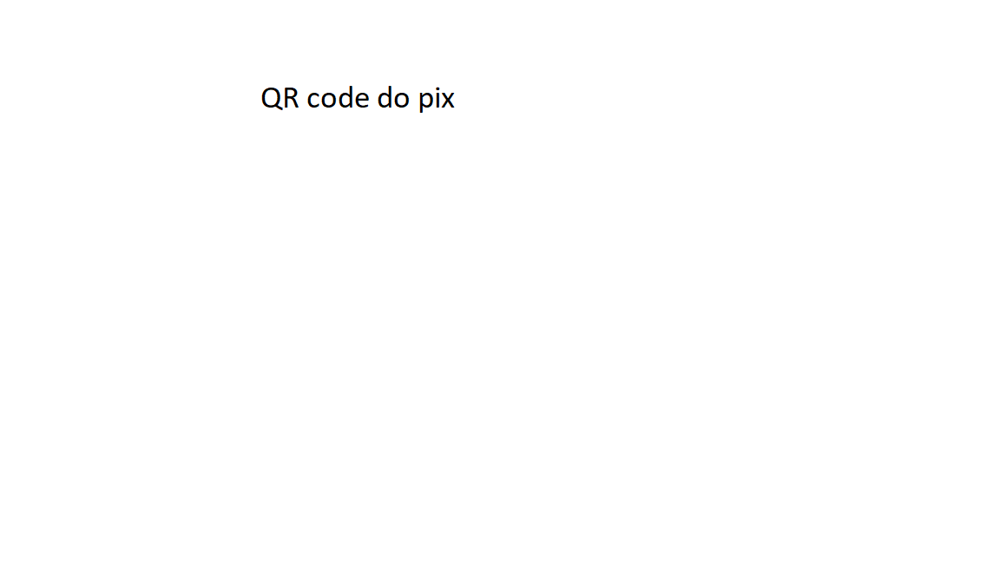

Voltar para a tabela
Regras do bolão da Copa do Mundo de 2022 - Primeira fase:
O presente bolão apresenta as seguintes regras:
- Pontuação relativa aos resultados dos jogos:
- 20 pontos - Para o participante que acertar o placar exato em jogos com seis ou mais gols . Exemplo: para Itála 6 X 1 Chile, apenas o palpite Itália 6 X 1 Chile resulta em vinte pontos;
- Exemplo de placares que a atendem esse quesito: 6 X 0 ou mais, 5 X 1 ou mais, 4 X 2 ou mais, qualquer igual ou superior a 3 X 3, etc.
- 10 pontos - Para o participante que acertar o placar exato. Exemplo: para Itála 2 X 1 Chile, apenas o palpite Itália 2 X 1 Chile resulta em dez pontos;
- 7 pontos - Para o participante que acertar o resultado do jogo e também o número de gols de apenas uma das equipes. Para Itália 2 X 1 Chile, resultados de vitória para o Itália como 3 X 1, 4 X 1, 2 X 0 darão sete pontos;
- 5 pontos - para o participante que acertar o resultado do jogo e errar o número de gols das duas equipes. Exemplo: Itália 2 X 1 Chile, resultados como 3 X 2, 3 X 0, 4 X 2 darão cinco pontos;
- 2 pontos - para o participante que acertar apenas o número de gols de apenas uma das equipes e errar o resultado do jogo. Exemplo: Itália 2 X 1 Chile, resultados como 1 X 1, 2 X 2, 0 X 1, 2 X 3 darão dois pontos;
- Os jogos do Brasil terão pontuação dobrada, ou seja, os cinco itens anteriores terão pontuação de 40, 20, 14, 10 e 4 pontos, respectivamente, para jogos da seleção brasileira.
- Pontuação relativa ao palpite dos semifinalistas - os participantes terão a seguinte pontuação, se acertarem:
- Campeão - 40 pontos;
- Vice-Campeão - 25 pontos;
- Terceiro colocado - 15 pontos;
- Quarto colocado - 10 pontos.
- O campeão será aquele com maior pontuação, somando os resultados dos jogos da primeira fase com a pontuação resultante dos palpites dos semifinalistas.
- Critérios de desempate: Em caso de pontuação igual, o desempate dar-se-á pelos seguintes critérios nesta ordem:
- Acerto do campeão;
- Acerto do vice-campeão;
- Acerto do terceiro colocado;
- Acerto do quarto colocado;
- maior número de placares exatos;
- maior número de resultados corretos;
- sorteio.
- O valor de cada aposta será de R$50,00 e o pagamento deverá ser feito via pix pela chave celular (35)99982-7930 ou pelo QR code abaixo.
- Doação: 20% de todo valor arrecadado será doado à instituição Baby Kit
- Premiação:
- Campeão - 50% do valor arrecadado;
- Segundo Colocado - 20% do valor arrecadado;
- Terceiro Colocado - 10% do valor arrecadado;
- Prazo para envio da aposta: 17/11/2022, quinta-feira
- O Valor arrecadado e o valor da premiação serão divulgados no dia 20/11/2022.
- Valerão para este bolão apenas os 48 jogos da primeira fase do mundial e os palpites de campeão, vice, terceiro e quarto colocados.
Jogos das oitavas, quartas, semifinais e final não farão parte da disputa.
-
Para questões não previstas, Paulo César de Carvalho :) , será soberano nas decisões polêmicas, as quais não poderão sequer serem contestadas.
